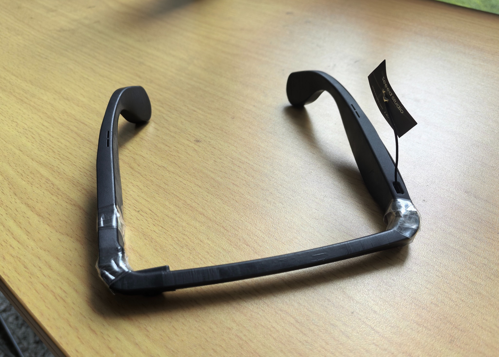
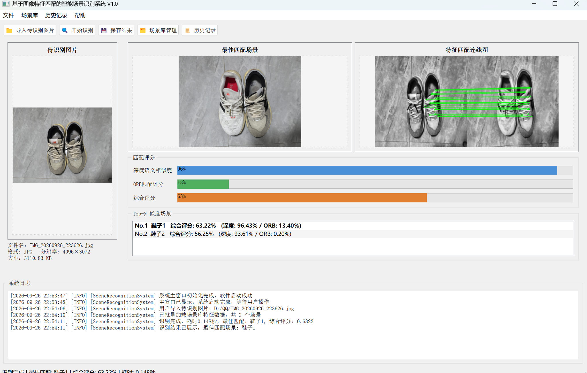
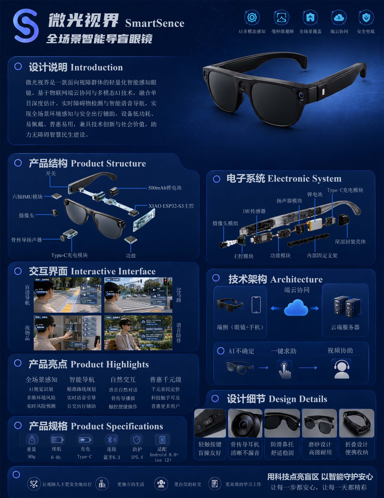

以技术探索可能，以实践创造价值。
关于我
计算机科学与技术专业本科生，关注计算机视觉、智能感知与嵌入式物联网应用。
从法语专业转入计算机专业，这是一次主动的方向选择。在新的学习阶段里，我持续补充专业知识，并通过学科竞赛与团队项目积累实践经验。
重视从真实需求出发，通过学习、调试与协作，把想法逐步转化为可展示的成果。在项目里承担过系统集成、运行环境配置、模型运行调试以及材料撰写与答辩等具体工作。
开启本科阶段学习
进入南京财经大学学习，逐步探索适合自己的发展方向。
转入计算机科学与技术专业
转专业考核总评第 2 名，开始系统学习计算机相关课程。
投入项目实践与学科竞赛
参与智能感知眼镜项目，开展系统集成、环境配置、模型运行调试与竞赛材料准备。
项目作品
微光视界｜智能导盲眼镜

面向视障群体出行辅助场景，探索设备端采集、云端视觉推理与结果反馈协同的智能感知系统。项目包含真实硬件原型、运行环境配置、视觉模型运行调试与竞赛展示。
- 参与端云协同架构规划、技术路线梳理与系统集成调试。
- 完成运行环境配置、视觉模型加载与系统调试，查阅资料解决依赖和模型运行问题。
- 负责大创申报书及项目材料的整理、撰写与修改，并参与竞赛答辩、回答评委问题。
项目成果：省级大学生创新创业训练计划立项；中国大学生计算机设计大赛校级一等奖、省级二等奖、国家级二等奖。
基于图像特征匹配的智能场景识别系统

围绕图像场景识别，结合深度语义相似度与 ORB 特征匹配，展示候选场景、匹配连线及综合评分。
- 功能展示：导入待识别图片、匹配最佳场景、查看特征匹配连线和评分结果。
- 支持场景库管理与历史记录查看，页面展示的是当前软件运行截图。
- 技术实践：图像处理、预训练视觉特征、ORB 特征匹配与桌面界面集成。
工业设计大赛参赛作品｜智能感知眼镜

通过完整参赛展图呈现产品外观、结构拆解、电子系统布局、交互界面与技术架构，展示产品设计与功能构想。
- 展图包含设计说明、产品结构、电子系统、交互界面、技术架构、产品亮点与设计细节。
- 以一张展板完整呈现从概念到系统布局的设计链路。
个人优势
以真实的学习表现、项目参与和团队经历为基础，持续积累综合能力。
技术实践
具备 Python 项目实践经验，接触 OpenCV、YOLO、视觉模型运行与调试，并参与 ESP32 摄像头数据采集及设备调试。
项目协作
参与技术路线梳理、系统集成、项目材料撰写与竞赛答辩，能够在团队协作中推进具体任务。
持续探索
主动调整专业方向，在课程学习、项目实践、学科竞赛与集体活动中不断拓展经验。
让想法继续向前。
感谢浏览这份作品集。这里记录着项目实践与学习探索，也期待未来更多新的可能。如果对某个项目想了解更多细节，欢迎进一步联系。